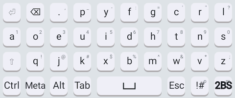
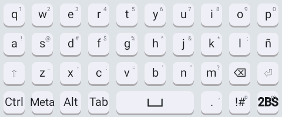
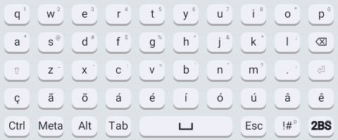
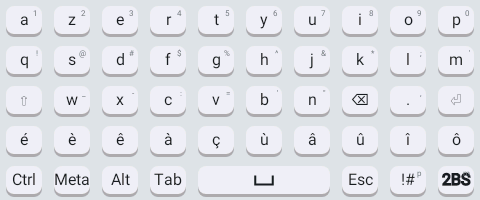
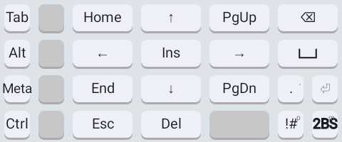
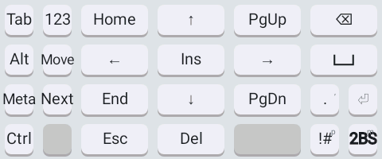
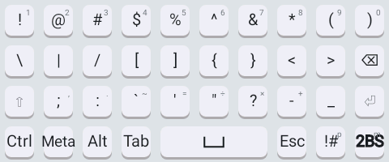
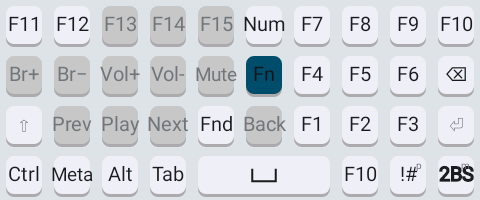
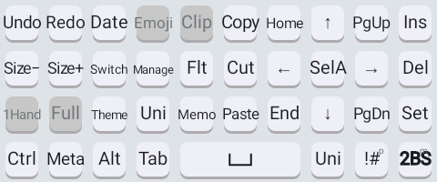

6 자판 배열
터치 자판은 열 칸짜리 직교 격자 하나이며, 키 크기가 모두 같고 줄이 어긋나지 않습니다. 전체 크기 자판의 아랫줄은 어느 페이지에서나 같습니다: Ctrl · Meta · Alt · Tab · 스페이스 · !# · 한글, 스페이스는 세 칸입니다. 메뉴와 키패드 페이지는 자기 키를 따로 두지 않고 자판 키와 !#를 길게 눌러서 엽니다. 두 키 모서리에 작은 m과 p가 적혀 그 사실을 알려 줍니다. !# 옆에 한 칸이 남는데, 자판마다 그 자판을 쓰는 분이 자주 찾는 것을 넣었습니다. 두벌식에는 한자 변환용 漢, QWERTY·Dvorak·Colemak에는 Esc(ssh로 vi를 쓰실 때를 위한 진짜 KEYCODE_ESCAPE입니다), 나머지에는 아무것도 넣지 않았습니다. 12키 자판 두 가지는 같은 틀을 다른 모양으로 씁니다. 수정자 키가 맨 왼쪽 열을 차지하고, 한글 키는 모두 두 칸 너비이며, 오른쪽 열에는 백스페이스와 스페이스, 그 아래로 마침표와 엔터가 있고, 아랫줄은 !#와 자판 키로 끝납니다. Tab 옆 칸에는 한글을 치는 동안 두 자판 모두 漢이 있어 한 번 누르면 변환되며, 오버레이가 덮고 있을 때는 변환할 읽기가 없으므로 비워 둡니다. 그 위의 Shift 는 두 자판 모두 Meta 옆 칸에, 오버레이가 무엇이든 같은 자리에 고정되어 있습니다. 한 번 누르면 다음 키 하나에만 걸리고(Shift+방향키로 선택) 길게 누르면 계속 눌려 있습니다. 자판이 바뀔 때마다 옮겨 다니는 키는 눈으로 찾아야 하는 키이기 때문입니다. 그 위의 두 칸은 열두 개 한글 키가 무엇을 보여 줄지 바꾸는 토글입니다. 123은 폰 키패드의 숫자를, Move는 커서 이동 키들(방향키, Home/End, PgUp/PgDn, Ins, Esc, Del)을 그 자리에 올리며, 같은 키를 다시 누르면 한글로 돌아옵니다. 천지인은 ㅇㅁ 왼쪽에 Next, 오른쪽에 !?를 둡니다. !?는 주변 한글 키와 같은 방식이어서, 누를 때마다 적힌 글자를 차례로 옮겨 가고 좌우로 끌면 그쪽 글자가 입력됩니다. 마침표와 쉼표는 엔터 옆 키에 있습니다.
서른네 가지 언어·문자 자판이 이 틀을 함께 씁니다:
| 자판 | 생김새 |
|---|---|
| 2beolsik(2벌식) | 표준 한글 전체 자판입니다 |
| QWERTY | 영문 자판입니다 |
| Dvorak | 영문이며 고유의 7/10/9 모양입니다. 윗줄에서 글자에 쓰이지 않는 세 칸에는 엔터·백스페이스·마침표가 왼쪽에 들어갑니다 |
| Colemak | 영문이며 QWERTY의 격자 위에 모든 글자가 Colemak의 제자리에 있습니다 — 윗줄 아홉, 가운뎃줄 열, 아랫줄 일곱. 글자가 쓰지 않는 오른쪽 위 한 칸에 백스페이스가 들어갑니다. 길게 누르기는 줄을 따라갑니다. 윗줄은 기호, 가운뎃줄은 숫자, 아랫줄은 문장부호입니다 |
| 스페인어(스페인·남미 공통) | QWERTY에 ñ이 가운뎃줄 끝에 들어가, 백스페이스는 아랫 글자줄로 내려가고 마침표는 스페이스 옆에서 , ¿ ¡를 품습니다. á é í ó ú ü는 각 모음에서 위로 끌면 나오고(ü는 아래), 가만히 길게 누르면 여전히 숫자입니다 |
| 포르투갈어(포르투갈·브라질) | QWERTY; 악센트가 부호 모양의 방향대로 끌기에 있습니다 — 그라브 왼쪽, 곡절 위, 아쿠트 오른쪽, 물결·세디유·분음 아래(a에서 à â á ã, o에서 ô ó õ, c 아래 ç); ª º는 a·o의 그룹 홀드를 대체합니다 |
| 이탈리아어 | QWERTY; 그라브 모음은 왼쪽으로 끌기(è는 é가 오른쪽에도) |
| 폴란드어 | QWERTY; 글자마다 부호가 끌기 한 방향 — 오고네크 아래(ą ę), 아쿠트·획 오른쪽(ć ń ó ś ź ł), 점 위(ż) |
| 그리스어 | 각 글자가 PC 자판의 제자리에 — 윗줄이 ; ς ε ρ τ υ θ ι ο π(;는 그리스어 물음표이고 · 아노 텔레이아를 품습니다), 톤 모음은 오른쪽 끌기(ά …), 분음은 아래(ϊ ϋ), 둘 다는 위(ΐ ΰ), 물음표에서 위로 끌면 ·. 인도네시아어·말레이어·필리핀어·스와힐리어는 QWERTY 그대로 쓰시면 됩니다 |
| 힌디어(हिन्दी) | InScript의 자리를 글자 4행+기호행으로, 같은 키보드 높이의 5줄. InScript의 체계가 위 끌기에 실립니다: 마트라를 위로 끌면 독립 모음(ा↑आ), 평자음을 위로 끌면 기식음(क↑ख). candra 가족은 한 키(ॉ에 ऑ ऍ ॅ), 치찰음은 स(위 श, 아래 ष), 비음 기호는 ं(위 ँ, 아래 ः), 단다는 위로 겹단다, ₹ ़ ऽ ॐ는 제 키가 있습니다. 글은 친 대로 들어가고 합자는 편집기가 그립니다 |
| 태국어(ไทย) | Kedmanee(TIS 820)의 자리를 글자 4행으로 — 첫 5줄 자판이고, 행 높이는 같은 키보드 높이의 1/5입니다. Kedmanee의 Shift층이 키마다 위로 끌기에 실리고(ุ↑ู, ำ↑ฎ, ื↑์ …), 10열이 밀어낸 글자는 제 짝을 탑니다 — 폐용자 ฃ ฅ는 ข ค 아래, "20단어" ใ는 ไ 아래, ง은 같은 연구개음 ก 아래, ฟ는 ฤ ฝ ๅ ฦ 네 방향 가족. 태국 숫자 ๑–๙ ๐이 홀드 숫자이고, ๆ가 스페이스 옆에서 ฯ를 품고 ฿는 아래로 끌기입니다. Shift 없는 한 페이지. 1960년대 인체공학 표준인 파타초트도 제 페이지로 함께 있습니다 — 기본 문자 33개를 열 칸씩 나누고 둘째 벌은 위로 끌기에 실었습니다 |
| 러시아어(Русский)와 이웃들 | ЙЦУКЕН 세 줄에 х ъ ж э б ю ё와 인용부호의 4번째 줄 — ё는 е 위 끌기로도. 우크라이나어는 і ї є에 ґ(г 위 끌기), 러시아어에는 라틴 소릿값 자리에 글자를 둔 포네틱 자판도 있습니다(화면 전용 — 윈도우는 이 자판의 다섯 글자를 데드키로 치는데, 이 키보드에는 아직 그 조합기가 없습니다). 불가리아어는 둘 다 — 폰들이 실제로 쓰는 포네틱과 QWERTY 와는 순서가 전혀 다른 국가 표준 БДС 5237, 마케도니아어·세르비아어는 표준 자리 그대로 |
| 아랍어(العربية) | 101 배열의 자리를 오른쪽부터, 아래에 함자 줄 — Shift층의 타슈킬은 101이 두는 그 키의 위 끌기. 마침표는 ،를 품고 « ؟ » ؛가 끌기에. 우르두어는 포네틱 배열을 따르고 짝 글자(ج↑چ, د↑ڈ …)가 끌기를 탑니다 |
| 조지아어(ქართული) | QWERTY 음성 대응 자리, 대소문자 없는 한 페이지 |
| 아르메니아어(Հայերեն) | 동부 타자기 자리; ռ는 ր 위, 일상 합자 և는 ե 위, 마침표는 아르메니아 고유의 ։(՝ ՞ ՜ ՛가 끌기에) |
| 페르시아어(فارسی) | ISIRI 9147의 자리를 10열에, 오른쪽부터 읽는 순서로 — 페르시아 전용 ک(U+06A9)·ی(U+06CC), Shift 없음. 점 있는 짝 ث ذ ظ ژ는 ت د ط ز에서 위로 끌기(점이 위에 붙으니까), 함자 가족은 ا(آ أ إ ء)·و·ی·ه 위에. 키 아래 숫자는 페르시아 숫자 ۰–۹, 마침표는 « » ؟ ؛(홀드 ،), 스페이스를 위로 끌면 ZWNJ. 백스페이스는 1행 끝, 엔터는 3행 끝 — 각자 오른쪽 가장자리입니다. US 물리 키보드로도 페르시아어를 칠 수 있습니다(Windows 페르시아 배열 그대로, Shift층과 Shift+Space ZWNJ 포함) |
| 일본어 플릭(フリック) | 일본 폰이 쓰는 12키 자판, 플릭 전용: 키를 누르면 あ단, 좌/상/우/하로 끌면 い う え お — 천지인과 같은 드래그, 같은 홀드 안내입니다. ゛゜小는 커서 앞 글자를 한 바퀴씩 돌리고(か→が, は→ば→ぱ, つ→づ→っ, 모음→작은 가나), わ의 플릭에 を ん ー가, 、。？！는 순환 키에 있습니다. 숫자는 길게 누르기. 가나→한자 변환은 아직 없습니다 |
| 일본어 로마자(ローマ字) | QWERTY 그대로 두고 치는 대로 히라가나가 됩니다 — ka か, sha/sya しゃ, 자음 두 번 っ(gakkou → がっこう), nn ん에 자음 앞의 홑 n도 ん, - ー, x/l로 작은 가나. 낱말은 커서 아래에서 조합되다 스페이스·문장부호에서 확정되고, 백스페이스는 키 하나를 되돌리며, 물리 키보드도 같은 방식입니다. 가나→한자 변환은 사전의 일이라 아직 없습니다 |
| 히브리어 | 표준 배열의 제자리에, 오른쪽부터 읽는 순서로(윗줄이 오른쪽에서 ק ר א ט ו ן ם פ). 히브리어에는 대문자가 없어 Shift 없이 한 페이지이고, 글자가 비워 준 모서리에서 백스페이스가 두 칸 폭이며, 마침표는 스페이스 옆 — 쉼표는 홀드, ׳ ״ ־는 끌기입니다. 글 방향은 편집기 몫이라 키보드는 손댈 것이 없습니다 |
| 프랑스어(AZERTY) | 폰이 그리는 AZERTY 그대로 10/10/6: azertyuiop / qsdfghjklm / ⇧ w x c v b n ⌫ . ⏎. 악센트 글자 열다섯이 부호 방향의 끌기에 있습니다 — è 왼쪽, ê 위, é 오른쪽, ë 아래, 모든 모음이 같은 규칙이고 æ œ는 오른쪽, ç ÿ는 아래. 마침표는 « , »로 끌고, 어디서든 가만히 홀드는 여전히 숫자·기호입니다 |
| 독일어 | 10열 QWERTZ — y와 z가 바뀌고, ü ö ä는 u o a에서 위로 끌기, ß는 s에서 아래로(Shift면 ẞ) |
| 터키어 | 둘입니다. Q는 10열 자판 — ü ö ğ는 위로, ş ç ı는 아래로 끌기. F는 터키 표준협회가 1955년에 터키어 글자 빈도에 맞춰 만든 국가 표준으로, 지금도 터키 타자수들이 배우는 배열입니다. Shift는 둘 다 터키어 규칙을 따라 i → İ, ı → I |
| 베트남어(Telex) | QWERTY 그대로이고 Telex 규칙이 치는 대로 글자를 만듭니다 — aa→â ee→ê oo→ô aw→ă ow→ơ uw→ư dd→đ, w 혼자는 ư, 성조 s f r x j(sắc huyền hỏi ngã nặng), z는 성조 제거, 부호·성조 키를 한 번 더 누르면 그 글자 자체가 들어갑니다. 낱말은 커서 아래에서 조합되다가 스페이스·문장부호에서 확정되고, 백스페이스는 키 입력 하나를 되돌립니다. 물리 키보드도 Telex로 칩니다. Telex를 모르는 분을 위해 â ă ê ô ơ ư đ도 각 글자의 끌기에 있습니다 |
| Cheonjiin(천지인) | 12키 자판입니다. ㅣ ㆍ ㅡ 세 요소로 모음을 만들고, 자음 키는 누를 때마다 자기 무리를 돕니다(ㄱ → ㅋ → ㄲ). 키에서 손가락을 끌면(18 dp 이상) 여러 번 눌러야 닿는 글자가 한 번에 입력되고, 그보다 짧게 미끄러진 것은 탭으로 처리됩니다. 자음에서는 왼쪽이 기본 글자(ㄱ), 오른쪽이 거센소리(ㅋ), 아래가 된소리(ㄲ)이고 위쪽은 아무것도 없습니다. 숫자는 끌어서가 아니라 길게 눌러서 넣기 때문입니다. 된소리가 없는 무리(ㄴㄹ, ㅇㅁ)는 아래쪽 칸도 비어 있습니다. 모음 키에서는 끄는 방향이 곧 글자입니다. ㆍ에서는 왼쪽 ㅓ · 오른쪽 ㅏ · 위 ㅗ · 아래 ㅜ, ㅣ에서는 왼쪽 ㅔ · 오른쪽 ㅐ · 위 ㅒ · 아래 ㅖ, ㅡ에서는 왼쪽 ㅝ · 오른쪽 ㅘ · 위 ㅚ · 아래 ㅟ입니다. 끌어서 넣은 모음도 계속 결합됩니다(ㅗ를 끌고 ㅣ를 누르면 ㅚ가 됩니다). 키를 길게 누르면 그 칸들을 보여 주는 안내가 뜨고 가운데에 그 키의 숫자가 있습니다. 원하는 쪽으로 끌었다 떼면 그 글자가, 움직이지 않고 떼면 숫자가 입력됩니다. 한글 키 열 개는 폰 키패드와 같은 자리에 있고 같은 숫자를 지닙니다(1–9, ㅇㅁ 아래가 0). 같은 키를 연달아 두 번 누르면 한 번의 순환이므로, 잠깐 쉬거나 Next 키를 누르면 다음 글자가 시작됩니다 |
| Naratgeul(나랏글) | 12키 자판입니다. 자음 블록에서 획 키가 획을 더하고(ㄴ → ㄷ → ㅌ) 쌍 키가 겹치게 만듭니다(ㅅ → ㅆ). 모음 키를 두 번 누르면 짝이 되는 모음에 닿고(ㅏ → ㅓ, ㅗ → ㅜ), 획 키가 그 모음을 이중모음으로 만듭니다(ㅏ → ㅑ, ㅗ → ㅛ). 열두 키가 폰 키패드와 같은 자리에 있어 길게 누르면 폰 키패드의 그 문자가 나옵니다(1–9, ㅡ 아래 0, 양옆에 *와 #) |
| 별도 자판 | 역할 |
|---|---|
| Arrows | 12키 틀 위의 커서 이동 자판입니다(Home ↑ PgUp / ← Ins → / End ↓ PgDn / Esc Del). 글자 중간에 화살표를 한 번 보는 것이 아니라 문서 안을 계속 돌아다닐 때를 위해, 토글이 아니라 자판으로 두었습니다. Meta 옆에 Shift 가 있어, 한 번 누르면 다음 키 하나에만 걸리고(Shift+화살표로 선택) 길게 누르면 계속 눌린 상태로 있습니다. 설정에서 켜야 자판 키가 들릅니다 |
| Keypad | 같은 틀 위의 폰 키패드입니다. 1–9, * 0 #을 한 번에 입력하고, 길게 누르면 계산기 기호가 나옵니다. Arrows 처럼 Meta 옆에 Shift 가 있습니다. 설정에서 켜야 자판 키가 들릅니다 |
| IPA | 낱말 옆에 발음을 적기 위한 국제음성기호 자판입니다. 기호는 소리가 비슷한 글자 자리에 있습니다(X-SAMPA 가 자판을 읽는 방식). e 는 ə(길게 누르면 ɛ ɜ ɚ ɝ), a 는 æ(ɑ ɐ ɶ), t 는 θ, d 는 ð, s 는 ʃ, z 는 ʒ, n 은 ŋ, j 는 ʤ, r 은 ɹ, v 는 ʌ, o 는 ɔ, u 는 ʊ, i 는 ɪ 입니다. 모든 키가 같은 계열의 나머지 기호를 길게 누르기에 담고 있어, 한 면과 길게 누르기만으로 전체 기호에 닿습니다. 아랫줄 마지막 칸은 강세·장음 기호 ˈ ˌ ː ˑ 입니다. Shift 는 또 다른 기호 묶음이 아니라 QWERTY 자리의 일반 글자입니다. 전사에는 평범한 p, t, k, s 가 가득하기 때문입니다. 그 자리의 마지막 칸은 / 이고 길게 누르면 [ ] 가 나옵니다. 물리 키보드도 두 면을 같은 자리에서 칩니다. 아래쪽 🔎 키가 이 면에 없는 나머지로 가는 길입니다. 누르면 그 기호를 부르는 이름을 치면 됩니다 — palm, schwa, fricative, 또는 X-SAMPA 코드 T — 맞는 기호들이 키 위에 떠서 고르면 들어갑니다. 길게 누르면 분류로 갑니다(모음·파열음·비음·마찰음·파찰음·접근음·설측음·전동음과 탄설음·흡착음과 내파음·강세와 길이·구별기호). 두 번 누르면 어느 기호에든 닿습니다. 설정에서 켜야 자판 키가 들립니다 |
자판 키는 설정에서 체크해 두신 자판들을 넣어 두신 순서대로 돌면서, 자판이 바뀔 때마다 이름을 알려 줍니다. 길게 누르면 메뉴 페이지가 열립니다. 한자 변환은 漢 키입니다. 2beolsik 글자 자판, 한글을 치는 동안의 두 12키 자판, 그리고 키패드 페이지에 있습니다.
글자 키를 길게 누르면 반복 입력 대신 다른 문자가 입력됩니다. 보조 글자는 1234567890, !@#$%^&*;, _-:='"? 세 묶음이고 한 줄에 한 묶음씩 들어갑니다. 각 묶음의 길이가 10/9/7인데 이는 QWERTY의 줄 모양이자 Dvorak의 7/10/9를 다른 순서로 읽은 것이라, Dvorak에서는 같은 세 묶음을 돌려 배치했습니다. 1-2-3번 줄이 3-1-2번이 되며, 어느 묶음도 쪼개거나 늘리지 않았습니다. 스페이스, 엔터, 백스페이스, 방향키에는 보조 글자가 없고 길게 누르면 계속 반복 입력됩니다.
물리 키보드는 이 모든 것과 무관합니다. 자기 배열을 그대로 유지하며, 화면 자판을 무엇으로 고르시든 화면 키의 동작만 달라집니다.
각 자판의 실제 모습입니다.
2beolsik(2벌식) — !# 옆의 漢이 방금 친 글자를 변환합니다:

그림 6.1 — 두벌식 자판
QWERTY — 스페이스 옆의 Esc, ssh로 vi를 쓰실 때를 위한 것입니다:

그림 6.2 — QWERTY 자판
Dvorak — 아랫줄은 같고, 글자 블록은 고유의 7/10/9 모양입니다:

그림 6.3 — Dvorak 자판
Colemak — 아랫줄은 같고, 글자는 Colemak의 자리에, 백스페이스는 오른쪽 위에 있습니다:

그림 6.4 — Colemak 자판
스페인어 — 가운뎃줄 끝의 ñ, 그 아래 백스페이스, 스페이스 옆 마침표(, ¿ ¡):

그림 6.5 — 스페인어 자판
포르투갈어·이탈리아어·폴란드어·베트남어·독일어(y/z 교환)·터키어는 QWERTY 모양 그대로 자기 글자를 품고, 베트남어는 Telex로 칩니다:

그림 6.6 — 포르투갈어 자판
US 물리 키보드가 모든 문자 자판을 칩니다. 자판을 선택해 두면 유선·블루투스 US 키보드가 그 언어의 Windows 배열을 따릅니다: 그리스어·히브리어·태국어(Kedmanee의 숫자행 글자와 Shift의 태국 숫자까지)·힌디 InScript는 전면 재매핑, 독일어는 오른쪽 키들에 ü ö ä ß, 프랑스어는 AZERTY처럼 숫자행에 é è ç à ù, 터키어는 i 키가 ı, 스페인어 ñ·포르투갈어 ç·이탈리아어 악센트 모음이 제자리에 옵니다. 페르시아어와 한국어는 전용 매퍼, 베트남어·일본어는 조합기로 칩니다. 출력이 ASCII뿐인 키와 데드키는 아직 편집기 몫입니다.
자기 글자가 끌기에 두기엔 너무 잦은 언어들은 4번째 글자 행을 받았습니다 — 독일어(ü ö ä ß와 독일 인용부호·€), 터키어(ü ı ö ş ğ ç), 폴란드어(ą ć ę ł ń ó ś ź ż), 포르투갈어(ç ã õ와 악센트 모음), 프랑스어(최빈 악센트 열 자), 그리스어(톤 모음), 페르시아어(10열이 밀어냈던 글자들) — 같은 키보드 높이의 5줄이고 행 높이는 1/5입니다. 끌기는 그대로 남아 두 경로가 같은 글자를 칩니다. 스페인어·이탈리아어· 베트남어·히브리어·일본어 로마자는 끌기로 충분해 4줄 그대로입니다.
언어의 글자는 목록이 아니라 끌기입니다. 부호 모양의 방향대로 키를 끌면 — 그라브 왼쪽, 곡절 위, 아쿠트 오른쪽, 세디유 아래 — 그 글자가 바로 입력됩니다. 천지인·일본어 플릭과 같은 드래그입니다. 길게 누르면 키 둘레에 네 방향 안내가 뜨고 가운데는 숫자입니다: 원하는 쪽에서 떼거나, 그 자리에서 떼면 숫자입니다. 숫자· 기호 홀드가 언어의 필수 글자를 한 키에 몰아넣는 일은 없고, 다섯 번째 글자가 필요하면 물러나는 쪽은 숫자입니다(포르투갈 ª º). 마침표 키는 언어별 인용부호를 좌우 끌기에(«» „“ “”), 통화를 아래에(€ ₺ ₫ ₪), 스페인어 ¿ ¡를 위·오른쪽에 싣습니다. (네 방향보다 후보가 많은 드문 키에는 예전 그대로 윗줄 띠가 뜹니다.)

그림 6.7 — 길게 누르기 띠
프랑스어 AZERTY — 고유의 10/10/6 모양과, 악센트 열다섯을 쓸 만하게 만드는 띠:

그림 6.8 — 프랑스어 자판

그림 6.9 — 프랑스어 길게 누르기 띠
Cheonjiin(천지인) — Meta 옆에 Shift, Tab 옆에 漢, ㅇㅁ 양옆에 Next 와 !?가 있습니다:

그림 6.10 — 천지인 자판
Naratgeul(나랏글) — 아랫줄에 획과 쌍, Meta 옆에 Shift, Tab 옆에 漢이 있습니다:

그림 6.11 — 나랏글 자판
Arrows — 커서 이동 키들을 자판 하나로 두었습니다:

그림 6.12 — 화살표 자판
Keypad — 한 번 누르면 숫자, 길게 누르면 계산기 기호입니다:

그림 6.13 — 키패드 자판
Tab 옆의 두 칸은 열두 개 한글 키를 폰 키패드의 숫자로, 또는 커서 이동 키로 바꿉니다:

그림 6.14 — 12키 숫자 오버레이

그림 6.15 — 12키 커서 오버레이
!# 키는 특수문자 페이지를 엽니다. 이 페이지에서는 모든 키가 자기 기호를 바로 입력합니다. 키를 길게 누르면 보조 문자가 즉시 입력되고, 겨냥할 팝업도 끌어야 할 것도 없습니다. 윗줄 기호들은 물리 키보드에서 같은 키를 쓰는 숫자를 품고 있어 !을 길게 누르면 1, )을 길게 누르면 0이 입력됩니다. ;은 쉼표를, :은 마침표를, ` 은 ~를, -는 +를 품고 있습니다. 스페이스 옆에는 Esc가 있습니다:

그림 6.16 — 특수문자 페이지
!#를 길게 누르면 특수키 페이지가 열립니다. 오른쪽에 키패드가, 그 곁에 특수키가 있습니다. 열릴 때는 Num이 켜져 있어 숫자가 보입니다. 다른 키보드에서와 마찬가지로 num lock은 여기서 숫자를 뜻합니다. 숫자와 + - = .는 문자를 입력하고, Esc·Prt·Scr·Brk·Menu는 키 이벤트를 보냅니다:

그림 6.17 — 특수키 페이지, 숫자
Num을 끄면 키패드가 방향키와 이동 키로 바뀝니다. Home/End, PgUp/PgDn, Ins, 앞쪽 삭제가 있습니다:

그림 6.18 — 특수키 페이지, 방향키
Fn은 페이지 전체를 함수키와 미디어 키로 바꿉니다. F1–F12는 키 이벤트를 보내고, 안드로이드에 키 코드가 없는 F13–F15와 미디어 키, Back은 흐리게 표시된 채 동작하지 않습니다:

그림 6.19 — 특수키, Fn 페이지
6.1 메뉴 페이지#
자판 키를 길게 누르면 열립니다. 오른쪽 절반은 편집하는 손을 위한 자리입니다. 가까운 가장자리를 따라 복사·잘라내기·붙여넣기가 있고, 방향키가 십자로 놓이며 그 가운데에 전체 선택이, 주위에 이동 키들이 있습니다. 설정은 엄지가 보지 않고도 닿는 모서리에 있습니다. 왼쪽 절반은 키보드 자체에 관한 것들입니다.

그림 6.20 — 메뉴 페이지
| 키 | 하는 일 | |
|---|---|---|
| Undo | 실행 취소 | 마지막 편집을 되돌립니다 |
| Redo | 다시 실행 | 되돌린 것을 다시 합니다 |
| Date | 날짜 | 현재 날짜와 시각을 글자로 넣습니다 |
| Emoji | 이모지 | 아직 만들지 않았습니다 — 흐리게 표시 |
| Clip | 클립보드 | 클립보드 목록을 엽니다. 액션바의 Clip 이 여는 것과 같은 목록입니다 |
| Copy | 복사 | 선택 영역을 복사합니다 |
| Cut | 잘라내기 | 선택 영역을 잘라냅니다 |
| Paste | 붙여넣기 | 클립보드 내용을 붙여 넣습니다 |
| SelA | 전체 선택 | 입력창 전체를 선택합니다 |
| Size− / Size+ | 높이 | 누를 때마다 키보드를 2퍼센트포인트씩 줄이거나 키웁니다. 화면 방향별로 따로 기억합니다 |
| Switch | 키보드 전환 | 시스템 키보드 선택 창을 엽니다 |
| Manage | 키보드 관리 | 키보드를 켜고 끄는 시스템 화면을 엽니다 |
| Flt | 플로팅 | 플로팅 패널을 켜거나 끕니다 |
| 1Hand | 한 손 | 아직 만들지 않았습니다 |
| RDsk | 원격 데스크톱 | 원격 데스크톱 자판을 켜고 끕니다 |
| Theme | 테마 | 색 테마를 차례로 바꿉니다: 시스템 → 라이트 → 다크 |
| Uni | 유니코드 | U+ 유니코드 직접 입력 패드를 엽니다 |
| Memo | 메모장 | 반투명 메모장을 엽니다 |
| Set | 설정 | ReteKey의 설정을 엽니다 |
| ← ↑ → ↓ | 방향키 | 커서를 옮깁니다. 누르고 있으면 반복됩니다 |
| Home / End | 줄 끝 | 줄의 처음이나 끝으로 갑니다 |
| PgUp / PgDn | 페이지 | 한 페이지씩 이동합니다 |
| Ins | 삽입 | Insert 키입니다 |
| Del | 앞쪽 삭제 | 커서 뒤쪽 글자를 지웁니다 |
| Uni | 스페이스 옆 | 메뉴 페이지 아랫줄에서 바로 유니코드 직접 입력 패드를 엽니다 |
흐리게 표시된 키들은 그려져 있을 뿐 아무 일도 하지 않습니다. 앞으로 그 기능이 들어갈 자리를 미리 잡아 둔 것으로, 나중에 기능이 생겨도 페이지 배치가 흔들리지 않게 하려는 것입니다.